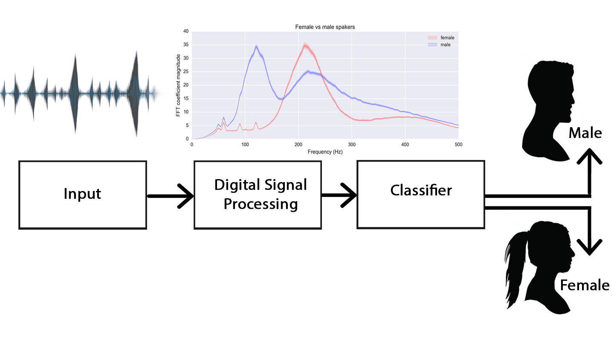

A Gender Classification system has been proposed using Linear Prediction Features. We have identified the voiced frames and then extracted the pitch from the Linear Prediction Residual of these frames for distinguishing male and female voice.
Other than pitch, formants and LPCCs were also used to help better classify the given audio sample. SVM was used to classify the voice after the features had been extracted .
Gender Classification from Speech using Linear Prediction Features
Abstract
1. Introduction
1.1 Introduction to Problem
The aim of this project is to identify the gender of a speaker based on the voice of the speaker using Linear Prediction Features. Gender-based differences in human speech are partly due to physiological differences such as vocal fold thickness or vocal tract length and partly due to differences in speaking style.
Since these changes are reflected in the speech signal, we hope to exploit these properties to automatically classify a speaker as male or female. The gender classification is done by using Support Vector Machines (SVM).
Since these changes are reflected in the speech signal, we hope to exploit these properties to automatically classify a speaker as male or female. The gender classification is done by using Support Vector Machines (SVM).
1.2 Figure

1.3 Literature Review
What do male and female speech sound different? Gender-based differences in human speech are partly due to physiological differences such as vocal fold thickness or vocal tract length and partly due to differences in speaking style.
Adult men and women typically have different sizes of vocal fold; reflecting the male-female differences in larynx size. The male vocal folds are between 17 mm and 25 mm in length. The female vocal folds are between 12.5 mm and 17.5 mm in length. The difference in vocal folds size between men and women means that they have differently pitched voices. Generally, women have higher pitch than men do.
The fundamental frequency/pitch of male voice lies in the range of 85 to 180 Hz while that of the female in the range of 150 to 300 Hz. This discrimination qualifies pitch as an effective feature for gender.
However, there is some overlap for the pitches of high-pitch males and low-pitch females. For increasing classification accuracy, combining pitch and other speech feature is necessary (discussed later).
A second important physiological difference is vocal tract length, that is, the distance from the vocal folds to the lips. All things being equal, the longer the vocal tract, the lower the resonant frequencies. The average length of the adult female vocal tract is about 14.5 cm, while the average male vocal tract is 17 to 18 cm long.
Men, generally speaking, have a larger vocal tract, which essentially gives the resultant voice a lower-sounding timbre. The vocal tract act as the resonator of the voice. The human vocal tract resonates in different frequency. Usually it shows four or more resonances. The Formant is the term applied to describe the resonant frequencies of the voice tract. In terms of the Formants, about five formants are required for male voice while four formats for female voice. The formant frequencies of female are higher than that of the male. The difference is very high in the third and fourth formants and least for the first formant. This is mainly due to the length of the voice tract.
Our approach is to extract features that help us distinguish the gender of a given human voice using the physiological differences in the two genders. Gender-based differences in human speech are partly due to physiological differences such as vocal fold thickness or vocal tract length and partly due to differences in speaking style. We are going to exploit the physiological differences to distinguish between the two genders.
The fundamental frequency/pitch of male voice lies in the range of 85 to 180 Hz while that of the female in the range of 150 to 300 Hz. This discrimination qualifies pitch as an effective feature for gender.
However, there is some overlap for the pitches of high-pitch males and low-pitch females. For increasing classification accuracy, combining pitch and other speech feature is necessary (discussed later).
A second important physiological difference is vocal tract length, that is, the distance from the vocal folds to the lips. All things being equal, the longer the vocal tract, the lower the resonant frequencies. The average length of the adult female vocal tract is about 14.5 cm, while the average male vocal tract is 17 to 18 cm long.
Men, generally speaking, have a larger vocal tract, which essentially gives the resultant voice a lower-sounding timbre. The vocal tract act as the resonator of the voice. The human vocal tract resonates in different frequency. Usually it shows four or more resonances. The Formant is the term applied to describe the resonant frequencies of the voice tract. In terms of the Formants, about five formants are required for male voice while four formats for female voice. The formant frequencies of female are higher than that of the male. The difference is very high in the third and fourth formants and least for the first formant. This is mainly due to the length of the voice tract.
Our approach is to extract features that help us distinguish the gender of a given human voice using the physiological differences in the two genders. Gender-based differences in human speech are partly due to physiological differences such as vocal fold thickness or vocal tract length and partly due to differences in speaking style. We are going to exploit the physiological differences to distinguish between the two genders.
1.4 Report Organization
Proposed Approach is explained in section 2.
Experiments and sample results are presented in section 3.
Conclusions and future precedences of the work are discussed in section 4.
2. Proposed Approach
1. Framing: The recorded discrete signal s(n) has always a finite length NTOTAL, but is usually not processed whole due to its quasi-stationary nature. The signal is framed into pieces of length N much less than NTOTAL samples. The vocal tract is not able to change its shape faster than fifty times per second, which gives us a period of 20 milliseconds during which the signal can be assumed to be stationary. The length N of the frames is based on a compromise between time and frequency resolution. An overlapping of the individual frames is used to increase precision of the recognition process.
2. Windowing: Before further processing, the individual frames are windowed. We have used a standard hamming window. where sw(n) is the windowed signal, s(n) is the original signal N samples long, and w(n) is the window itself.
3. Pre-Emphasis: Pre-emphasis is processing of the input signal by a low order digital FIR filter so as to flatten spectrally the input signal in favor of vocal tract parameters. It makes the signal less susceptible to later finite precision effects. This filter is usually the first order FIR filter defined as sp(n)=s(n)-a.s(n-1) Where a is a pre-emphasis coefficient lying usually in an interval of (0.9 to1), s(n) is the original signal, and sp(n) is a pre-emphasized signal.
Identifying voiced/unvoiced/silence parts of speech: Speech signal can be classified into voiced, unvoiced and silence regions. The near periodic vibration of vocal folds is excitation for the production of voiced speech. The random like excitation is present for unvoiced speech. There is no excitation during silence region. Majority of speech regions are voiced in nature that include vowels, semivowels and other voiced components. The voiced regions looks like a near periodic signal in the time domain representation. In a short term, we may treat the voiced speech segments to be periodic for all practical analysis and processing. We have used Zero Crossing Rate, Pitch and a Magnitude Sum Function to classify the frames as voiced using simple thresholds, which were functions of these features themselves.
Zero Crossing Rate is the rate of sign-changes along a signal, i.e., the rate at which the signal changes from positive to negative or back. Pitch is the fundamental frequency of the input excitation to our vocal tract. Magnitude Sum Function sums the modulus of all the samples in our frame.
After identifying the voiced frames, we have primarily worked on these frames to calculate the pitch of the human voice.
Features Extraction Using Linear Predictive Analysis (LPC)
Speech signal is produced by the convolution of excitation source and time varying vocal tract system components. These excitation and vocal tract components are to be separated from the available speech signal to study these components independently.
The linear predictive coding (LPC) method for speech analysis and synthesis is based on modeling the Vocal tract as a linear All-Pole (IIR) filter having the system transfer function:
Where p is the number of poles, G is the filter Gain, and a[k] are the parameters that determine the poles.
Compuatation of LP Coefficients
The vocal tract system can be modeled as a time-varying all-pole filter using segmental analysis. The segmental analysis corresponds to the processing of speech as short 30ms windows. The vocal tract system is assumed to be stationary within the window and is modeled as an all-pole filter of order p using linear prediction (LP) analysis. The LP analysis works on the principle that a sample value in a correlated, stationary sequence can be predicted as a linear weighted sum of the past few (p) samples. If s(n) denotes a sequence of speech samples, then the predicted value at the time instant n is given by,
By Autocorrelation Method
At first the speech signal s(n) is multiplied by a window w(n) to get a windowed speech segment sw(n), where,
The values of {ak} that minimize E are found by assigning the partial derivatives of E with respect to {ak} to zeros. If we set ∂E/∂ak = 0, for k = 1,... ,p, we get p equations with p unknown variables {ak} as shown below:
In above equation , the windowed speech signal sw(n) = 0 outside the window w(n). The linear equations can be expressed in terms of the autocorrelation function. This is because the autocorrelation function of the windowed segment sw(n) is defined as
The set of linear equations can be represented in the following matrix form:
Above equation can be expressed as
Ra=r
The resulting matrix is a Toeplitz matrix where all elements along a given diagonal are equal. At the synthesis filter H(z)=1/A(z), the zeros of A(z) become the poles of H(z).
Computing LP Residual
The LP residual signal used as excitation, there are large error values at regular intervals within voiced regions of speech. These are the instants of glottal closure at which the vocal tract system is excited. Hence the LP residual signal can be approximated to the excitation source signal. LP residual signal is obtained by passing the speech signal through inverse filter designed with LP coefficients (LPCs).The block diagram of the inverse filter is shown in Figure below: LPCC feature extraction
The idea behind LPCC is to model the human vocal tract by digitalize all-pole filter.The following block diagram shows the process for analyse the LPCC feature vectors.
Block Diagram :Step for LPCC There is a simple recursive formula for computing Linear Prediction Cepstral Coefficients directly from LPCs without doing any DFTs Even though an infinite number of Linear Prediction Cepstral Coefficients can be calculated, we have calculated only the first 10(10-12 is standard).
Pitch calculation using LP residual
For voiced speech segment its LP residual is observed to be periodic. In LP residual signal, peak amplitudes refers to closure of vocal folds (glottal closure). The periodicity in LP residual indicates the pitch information.
As the LP residual is an error signal obtained by the LP analysis, it is noisy in nature. As the pitch marks are characterized by the sharp and periodic discontinuity, it cause a large error in the computed LP residual. So the periodicity of the error gives the pitch period of that segment of speech and this can be computed by the autocorrelation method. It has to be noted that for unvoiced speech signal the residual will be like random noise without any periodicity.
The accurate pitch extraction is not an easy task due to the non-stationarity and quasi-periodicity of speech signal, as well as the interaction between the glottal excitation and the vocal tract. The periodicity associated with such segments is defined is pitch period in the time domain and 'Pitch frequency or Fundamental Frequency in the frequency domain. Unless specified, the term 'pitch' refers to the fundamental frequency'. Pitch is an important attribute of voiced speech. It contains speaker-specific information. It is also needed for speech coding task.
Once the LPC coefficients are competed, we can determine whether the input speech frame is voiced, and if so, what the pitch is. If the speech frame is decided to be voiced, an impulse train is employed to represent it, with nonzero taps occurring every pitch period. A pitch-detecting algorithm is used in order to determine to correct pitch period / frequency. The autocorrelation function is used to estimate the pitch period as . However, if the frame is unvoiced, then white noise is used to represent it and a pitch period of T=0 is transmitted. Therefore, either white noise or impulse train becomes the excitation of the LPC synthesis filter
3. Experiments & Results
3.1 Dataset Description
We have used a part of CMA PDU database and then we created a custom database of our own.
All the files have a sampling rate of 11025 Hz and are in wav format. They all are single channel and have a 8 Bit/sample rate
3.2 Observations
After using SVM to classify the test samples based on the extracted features, we got different accuracies while using different sets of features. We got an accuracy of 85% while using Formants and Pitch. While formants should help us better classify, we got a better accuracy(92%) using only the pitch.
.png)
.png)
.png)
.png)
.png)
.png)
4. Conclusions
4.1 Summary
Considering the efficiency of the results obtained, it is concluded that the algorithm implemented in MATLAB is working successfully.Different speech by the same speaker spoken in the near to identical conditions generated the same pitch value establishing the system can be used for speaker identification after further work.
This project is focused on gender classification using speech signals. Three main excitation parameters based on the pitch,Linear prediction cepstrul coefficients (LPCC) and Formant frequency extraction were discussed. Each of the described algorithms has their advantages and drawbacks. From the experimental results, the pitch method has the highest efficiency for the taken data sets.
4.2 Future Extensions
Our long term goal is to implement a gender classifier that can automatically predict the gender of the speaker based on the above investigation. We are considering an indoor environment(less noise).We want to see that the classification of sounds into global categories can be performed with very less calculation effort.
By identifying the gender and removing the gender specific components, higher compression rates can be achieved of a speech signal, thus enhancing the information content to be transmitted and also saving the bandwidth. Our work related to gender detection showed that the model can successfully be implemented in Speaker Identification, separating the male and female speaker to reduce the computation involved at later stage. Further work is also needed with regard to formant calculation by extracting the vowels from the speech. While working on formants we concluded that including formant for gender detection would make the system text dependent.
5. References
1.Linear prediction analysis
(http://iitg.vlab.co.in/?sub=59&brch=164&sim=616&cnt=1088)
2.Digital signal Processing, Alan V. Oppenheim/ Ronald W. Schafer
3. Vinay K. Ingle, John G. Prokakis, “DigitalSignal Processing Using MATLAB”
4. J.R. Deller Jr., J.H.L. Hansen, J.G. Proakis, Discrete-Time Processing of Speech Signals, IEEE Press, New York, 2000
5. Eric Keller, “Fundamentals Of Speech Synthesis And Speech Recognition”
6.J. Makhoul, "Linear prediction: a tutorial review", Proc. IEEE, vol. 63, 1975.
7.L.R. Rabiner and R.W. Schafer, Theory and Application of Digital Speech Processing, First Edition, Prentice Hall, New York, 2011.
8.Gender Classification by Speech Analysis - Semantic Scholar Research paper
9.Pawan Kumar, Nitika Jakhanwal and Anirban Bhowmick
"Gender classification using pitch and formants"
10.Gender identification and performance analysis of speech signals
(http://ieeexplore.ieee.org/xpls/icp.jsp?arnumber=7342709)
11. Researcg gate publications
(https://www.researchgate.net/publication/220846517_Gender_classification_using_pitch_and_formants)